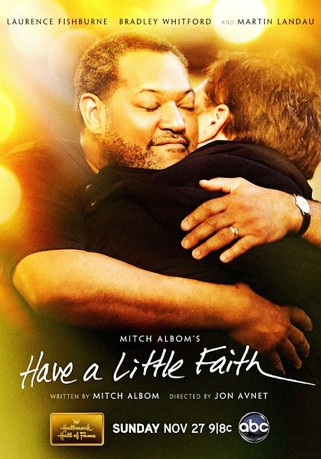
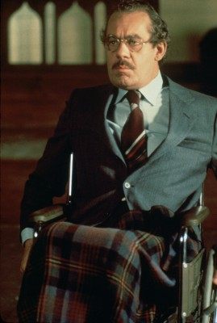

#2020 Damit ihr mich nicht vergesst
Alternativ: Have a Little Faith
 
 IMDB-Wertung: 6.8 / 10
IMDB-Wertung: 6.8 / 10  Metascore: 0
Metascore: 0 
Der nicht besonders religiöse Autor Mitch Albom trifft auf seinen früheren, in die Jahre gekommenen, Rabbi Albert Lewis, der ihn bittet, seinen Nachruf zu halten. Mitch, der sich dieser Aufgabe zunächst nicht gewachsen fühlt, lernt den Rabbi durch seine Besuche immer mehr zu schätzen. Gleichzeitig reift in ihm der Wunsch, sich für andere Menschen zu engagieren. Auf der Suche nach einer Aufgabe lernt er den Pastor Henry Covington kennen, der eine kriminelle Drogen-Vergangenheit hat. Zweifelte er anfangs noch, ob er dem Pastor wirklich helfen soll, lernt er doch mit der Zeit, dass es Menschen gibt, die sich wirklich ändern können.
Jahr: 2011
Dauer: 82 Minuten
FSK: 6
Land: USA Studio: ABCTonspuren: DTS - ,
Untertitel:
Auflösung: 1080p (1920x1080) Größe: 7946 MB
Genre: Drama
Regisseur: Jon Avnet
Drehbuch: Mitch Albom
Soundtrack: Ed Shearmur
Darsteller:
 Laurence Fishburne als Henry Covington
Laurence Fishburne als Henry Covington Bradley Whitford als Mitch
Bradley Whitford als Mitch Anika Noni Rose als Annette
Anika Noni Rose als Annette Mykelti Williamson als Donnie
Mykelti Williamson als Donnie- Deanna Dunagan als Sarah
- Melinda McGraw als Janine
 Martin Landau als Rabbi Albert Lewis
Martin Landau als Rabbi Albert Lewis- Bryce Clyde Jenkins als Young Henry
- Langston Fishburne als Henry at 20
- April Parker-Jones als Wilma Covington
- Larry VanBuren Jr. als Derrick Covington
- Miles Fisher als Ricky
- Sidi Henderson als Junkie #2
- Sarab Kamoo als Nurse #2
- Mark Rademacher als Newspaper Editor
- Alexander Christopher Jones als Marcus
- Maxfield Lund als Cop
 Gordon Michaels als Miller
Gordon Michaels als Miller- Lynn Anderson als Sabino Family Member , uncredited
- Kelly Bacon als Thanksgiving Family Member , uncredited
 Wayne Brinston als Church Member , uncredited
Wayne Brinston als Church Member , uncredited Dennis Doyle Jr. als Detective , uncredited
Dennis Doyle Jr. als Detective , uncredited- Robert Forte Shannon III als Deron , uncredited
- Jacob Godzak als Audience Member , uncredited
- Courtlen Hale II als Henry's Younger Brother / Childhood , uncredited
 Steven Hauptman als (uncredited
Steven Hauptman als (uncredited- Michael Justice als Drug Kid , uncredited
- Kef Lee als Inmate , uncredited
- Brad Leo Lyon als Pro Football Player , uncredited
- Terri Partyka als (uncredited
- Luke Richmond als Joey , uncredited
- Kristyn Shelley als Audience Member , uncredited
- Joseph Smith als (uncredited
- Peter Tocco als NYPD Officer , uncredited
- Anthony Castelow als Cass
- Wayne David Parker als Gene
-  Jonathan Adams als Willie Covington
- John Hardy als Baptist Preacher
- Brian Marable als Morris
- Alex Leydenfrost als Cop, Sc. 19
- Wallace Bridges als Dwayne
- Theo Williamson als Black Politician
- Arthur Lamont Cartwright als Junkie #1
- Suzi Reagan als Nurse #1
- Ken Brown als Sportswriter #1
- Pat Caputo als Sportswriter #2
- Yancey Fuqua als Orderly
- Marc Rosenthal als Rabbi
- Anton Bassey als Homeless Man
- Nicole Ramirez als Waitress
Datei: X:\2011(A-F)\Damit ihr mich nicht vergesst (2011, FSK6, 1920x1080).mkv seit 25.09.2015
Festplatte: HD 2010(G-Z)-2011(A-F)
 Es gibt insgesamt 86 Filme in der Gruppe '2011(A-F)'
Es gibt insgesamt 86 Filme in der Gruppe '2011(A-F)'